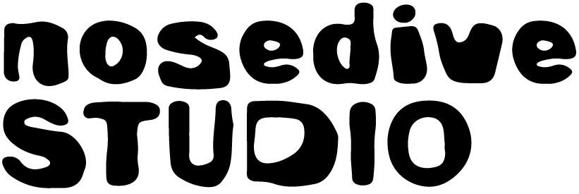

- Unsichtbar sichtbar machen: Datenschutzrisiken existieren abstrakt – wir machen sie in 60 Minuten selbst erlebbar.
- Digitale Mündigkeit: Teilnehmende verstehen die Mechanismen des Werbe-Ökosystems und können informierte Entscheidungen treffen.
- Regulierungskompetenz: Grundlage für informierte Debatten über Datenschutzgesetze und die Regulierung von Data Brokern.
Track with Ads Workshop
Jedes Mal, wenn du eine App öffnest, die Werbung anzeigt, findet in Millisekunden eine Auktion statt: Dein Standort, dein Gerät, deine Interessen – alles wird in Echtzeit gesammelt, ausgewertet und versteigert. Du bist nicht der Kunde. Du bist ein Produkt.
Diese Daten landen längst nicht mehr nur in der Werbeindustrie. Datenhändler kaufen, aggregieren und verkaufen sie weiter – an Geheimdienste, Versicherungen, und jeden, der bereit ist zu zahlen. Fast immer ohne transparente Einwilligung der Betroffenen.
Im Workshop Track with Ads erlebst du hautnah, wie aus frei käuflichen Werbedaten ein vollständiges Bewegungsprofil einer Person entsteht – und was das für Privatsphäre, Autonomie und demokratische Teilhabe bedeutet.
Der Workshop richtet sich an alle, die verstehen wollen, wie dieses System wirklich funktioniert – ob Bürger:innen, die ihre eigene digitale Spur hinterfragen, oder Fachleute und Entscheider:innen, die konkret handeln wollen.
trackwithads.de ↗Warum
Was
- Digitale Schnitzeljagd: Teams rekonstruieren Bewegungsprofile aus synthetischen Standortdaten, der einem realen aus dem Ad-Tech-Ökosystem nachempfunden ist.
- Live-Web-App: Analyse in Echtzeit im Browser – keine technischen Vorkenntnisse nötig.
- Plenumsdiskussion: Gemeinsame Reflexion und Diskussion über Regulierungsansätze zum Abschluss.
Wie
Format-flexibel: als eigenständiges Event, als interaktives Konferenz-Intermezzo oder eingebettet in ein umfassenderes Bildungsprogramm zu Datenschutz und Digitalpolitik.
Voraussetzungen
Prozess
-
01
Intro & Kontext
Kurze Erklärung des RTB-Systems und der Datenschatten, die wir alle hinterlassen. -
02
Schnitzeljagd in Teams
Teams analysieren echte Standortdaten und rekonstruieren ein Bewegungsprofil. -
03
Auflösung & Plenum
Ergebnisse werden geteilt, Prozess aufgedeckt, gemeinsame Reflexion. -
04
Diskussion & Ausblick
Regulierungsansätze, eigene Schutzmaßnahmen, offene Fragen.
in Zusammenarbeit mit
